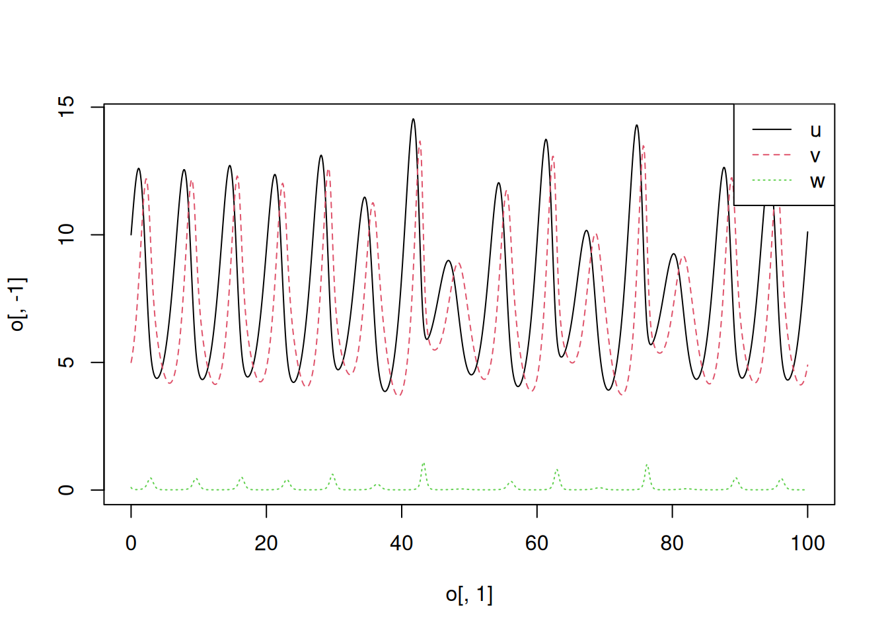
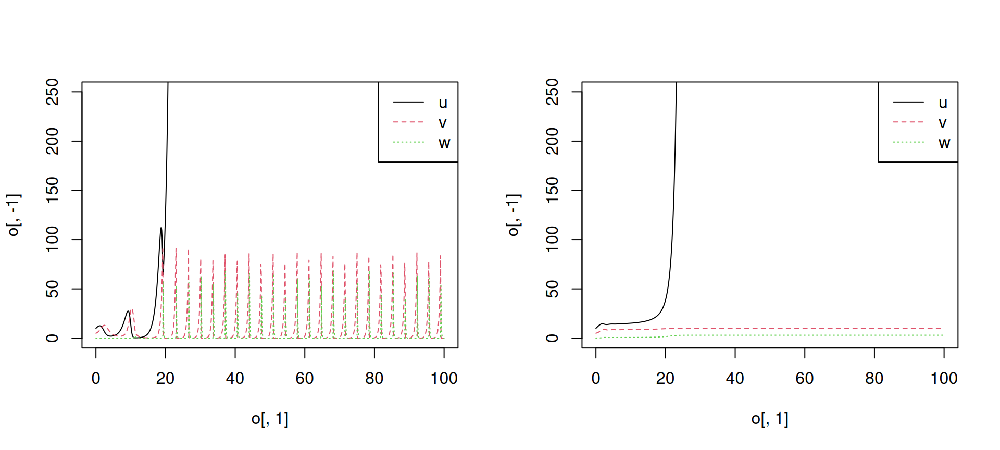
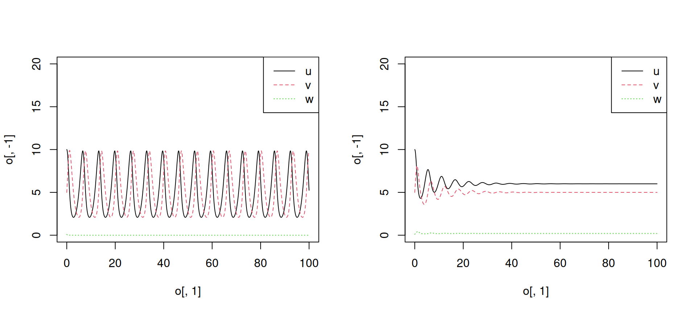
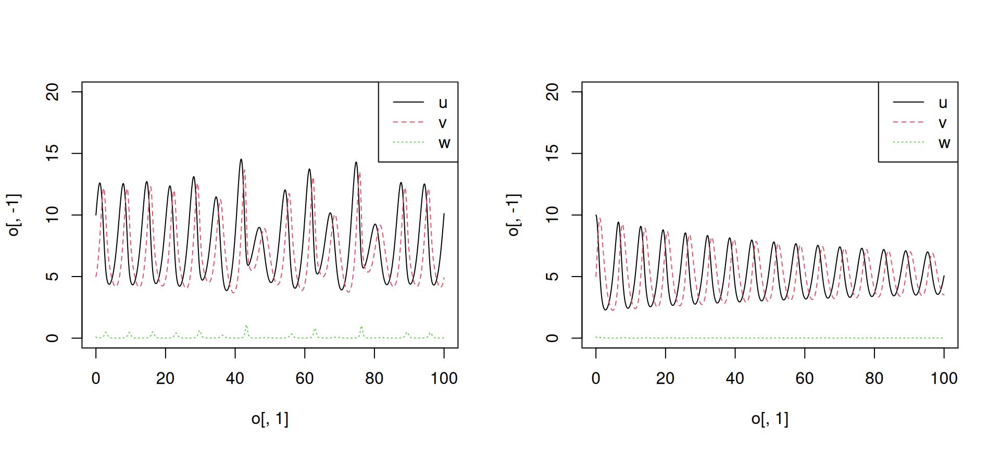
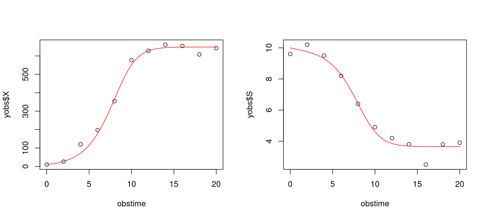
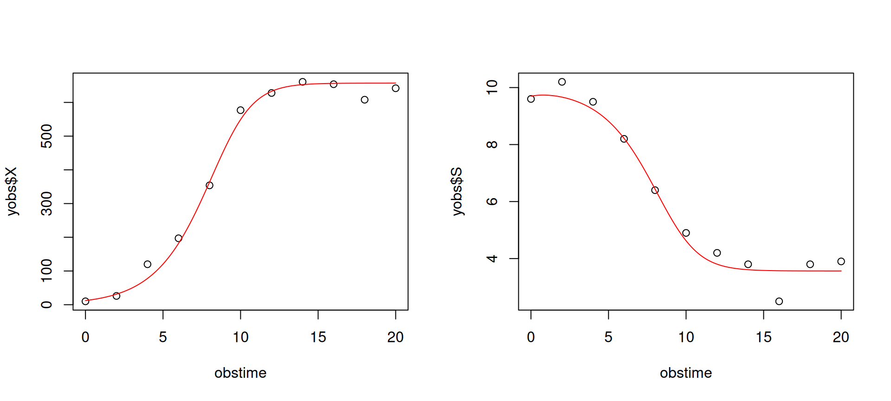

f <- function(x, y, k) { x * y / (1 + k * x) } # Holling II
func <- function(time, y, parms) {
with(as.list(c(parms, y)), {
du <- a * u - alpha1 * f(u, v, k1)
dv <- -b * v + alpha1 * f(u, v, k1) +
- alpha2 * f(v, w, k2)
dw <- -c * (w - wstar) + alpha2 * f(v, w, k2)
list(c(du, dv, dw))
})
}
times <- seq(0, 100, 0.1)
parms <- c(a = 1, b = 1, c = 10, alpha1 = 0.2, alpha2 = 1, k1 = 0.05, k2 = 0, wstar = 0.006)
y <- c(u = 10, v = 5, w = 0.1)1 The Basics
1.1 Building simecol objects
The intention behind simecol is the construction of “all-in-one” model objects. That is, everything that defines one particular model, equations and data are stored together in one simObj (spoken: sim-Object), and only some general algorithms (e.g., differential equation solvers or interpolation routines) remain external, preferably as package functions (e.g., function lsoda in the package deSolve (Soetaert et al. 2010)) or as functions in the user workspace.
This strategy has three main advantages:
- We can have several independent versions of one model in the computer memory at the same time. These instances may have different settings, parameters and data or even use different formulas, but they do not interfere with each other. Moreover, if all data and functions are encapsulated in their
simObjects, identifiers can be re-used and it is, for example, not necessary to keep track over a large number of variable names or to invent new identifiers for parameter sets of different scenarios. - We can give
simObjects away, either in binary form or as source code objects. Everything essential to run such a model is included, not only the formula but also defaults for parameters and data. You, or your users, need only R, some packages and your model object. It is also possible to start model objects directly from the internet or, on the other hand, to distribute model collections as R packages. - All
simObjects can be handled, simulated and modified with the same generic functions, e.g.,sim,plotorparms. Our users can start playing with the models without the need to understand all the internals.
While it is, of course, preferable to have all parts of a model encapsulated in one object, it is not mandatory to have the complete working model object before starting to use simecol.
simecol models (in the following called simObjects) can be built step by step, starting with mixed applications composed of rudimentary simObjects and ordinary user space functions. When everything works, you should encapsulate all the main parts of your model in the simObject to get a clean object that does not interfere with others.
1.1.1 An example
We start with the example given in the simecol-introduction (Petzoldt and Rinke 2007), an implementation of the UPCA model of Blasius et al. (1999), but we write it in the usual deSolve style, i.e., without using simecol:
The model is defined by 5 variables in the R user workspace, namely f, func, times, parms and y (init). The implementation is similar to the help page examples of package deSolve and we can solve it exactly in the same manner:
1.1.2 Transition to simecol
If we compare this example with the simecol structure, we may see that they are kind of similar. This obvious coincidence is quite natural, because the notation of both deSolve and simecol is based on the state-space notation of control theory1.
Due to this, only small restructuring and renaming is needed to form a simObj:
library("simecol")
f <- function(x, y, k) { x * y / (1 + k * x) } # Holling II
upca <- new("odeModel",
main = function(time, y, parms) {
with(as.list(c(parms, y)), {
du <- a * u - alpha1 * f(u, v, k1)
dv <- -b * v + alpha1 * f(u, v, k1) +
- alpha2 * f(v, w, k2)
dw <- -c * (w - wstar) + alpha2 * f(v, w, k2)
list(c(du, dv, dw))
})
},
times = seq(0, 100, 0.1),
parms = c(a = 1, b = 1, c = 10, alpha1 = 0.2, alpha2 = 1,
k1 = 0.05, k2 = 0, wstar = 0.006),
init = c(u = 10, v = 5, w = 0.1),
solver = "lsoda"
)We may notice that the assignment operators <- changed to a declarative equal sign = for the slot definitions, that some of the names (y, func) were changed to the pre-defined slot names of simecol and that all the slot definitions are now comma-separated arguments of the new function that creates the upca object. The solver method lsoda is also given as a character string pointing to the original lsoda function in package deSolve.
The new object can now be simulated very easily with the sim function of simecol that returns the object with all original slots and one additional slot out holding the output values. A generic plot function is also available for basic plotting of the output:
It is now also possible to extract the results from upca with a so-called accessor function out, and to use arbitrary, user-defined plot functions:
plotupca <- function(obj, ...) {
o <- out(obj)
matplot(o[, 1], o[, -1], type = "l", ...)
legend("topright", legend = c("u", "v", "w"), lty = 1:3, bg = "white", col = 1:3)
}
plotupca(upca)
Okay, that’s it, but note that function f is not yet part of the simecol object, that’s why we call this here a “mixed implementation”. This function f is rather simple here, but it would also be possible to call functions of arbitrary complexity from main.
1.1.3 Creating scenarios
After defining one simecol object (that we can call a parent object or a prototype), we may create derived objects, simply by copying (cloning) and modification. As an example, we create two scenarios with different parameter sets:
sc1 <- sc2 <- upca
parms(sc1)["wstar"] <- 0
parms(sc2)["wstar"] <- 0.1
sc1 <- sim(sc1)
sc2 <- sim(sc2)
par(mfrow = c(1, 2))
plotupca(sc1, ylim = c(0, 250))
plotupca(sc2, ylim = c(0, 250))
wstar = 0, right: wstar = 0.1; functional response f is Holling II).
If we simulate and plot these scenarios, we see an exponentially growing in both cases, and cycles resp. an equilibrium state for and for the scenarios respectively (Figure 2).
If we now also change the functional response function from Holling II to Lotka-Volterra:
f <- function(x, y, k) { x * y }both model scenarios, sc1 and sc2, are affected by this new definition:
sc1 <- sim(sc1)
sc2 <- sim(sc2)
par(mfrow = c(1, 2))
plotupca(sc1, ylim = c(0, 20))
plotupca(sc2, ylim = c(0, 20))
wstar = 0, right: wstar = 0.1; functional response f is Lotka-Volterra).
Now, we get a stable cycle for and in scenario 1 and an equilibrium for all state variables in scenario 2 (Figure 3). You may also note that the new function f has exactly the same parameters as above, including the, in the second case obsolete, parameter k.
In the examples above, function f was an ordinary function in the user workspace, but it is also possible to implement such functions (or sub-models) directly as part of the model object. As one possibility, one might consider defining local functions within main, but that would have the disadvantage that such functions are not easily accessible from outside.
To allow the latter, simecol has an optional slot equations, that can hold a list of sub-models. Such an equations slot can be defined either during object creation, or functions may be added afterwards. In the following, we derive two new clones with default parameter settings from the original upca object, and then assign one version (the Holling II functional response) to scenario 1 and the other version (simple multiplicative Lotka-Volterra functional response) to scenario 2 (Figure 4):
sc1 <- sc2 <- upca
equations(sc1)$f <- function(x, y, k) { x * y / (1 + k * x) }
equations(sc2)$f <- function(x, y, k) { x * y }
sc1 <- sim(sc1)
sc2 <- sim(sc2)
par(mfrow = c(1, 2))
plotupca(sc1, ylim = c(0, 20))
plotupca(sc2, ylim = c(0, 20))
f is Holling II, right: functional response is Lotka-Volterra).
This method allows comparing models with different structures in the same way as scenarios with different parameter values. In addition, it is also possible to define model objects with different versions of built-in sub-models, that can be alternatively enabled:
upca <- new("odeModel",
main = function(time, y, parms) {
with(as.list(c(parms, y)), {
du <- a * u - alpha1 * f(u, v, k1)
dv <- -b * v + alpha1 * f(u, v, k1) +
- alpha2 * f(v, w, k2)
dw <- -c * (w - wstar) + alpha2 * f(v, w, k2)
list(c(du, dv, dw))
})
},
equations = list(
f1 = function(x, y, k) { x * y }, # Lotka-Volterra
f2 = function(x, y, k) { x * y / (1 + k * x) } # Holling II
),
times = seq(0, 100, 0.1),
parms = c(a = 1, b = 1, c = 10, alpha1 = 0.2, alpha2 = 1, k1 = 0.05, k2 = 0, wstar = 0.006),
init = c(u = 10, v = 5, w = 0.1),
solver = "lsoda"
)
equations(upca)$f <- equations(upca)$f11.1.4 Debugging
As stated before, all-in-one encapsulation of all functions and data in simObjects has many advantages, but there is also one disadvantage, namely debugging. Debugging of S4 objects is sometimes cumbersome, especially if slot functions (e.g., main, equations, initfunc) come into play. These difficulties are not very important for well-functioning ready-made model objects, but they appear as an additional burden during model building, in particular if these models are technically not as simple as in our example.
Fortunately, there are easy workarounds. One of them is implementing the technically challenging parts in the user workspace first using the above-mentioned mixed style. Then, after developing and debugging the model and if everything works satisfactorily, integrating the parts into the object is straightforward, given that you keep the general structure in mind. In the example below, we implement the main model as a workspace function fmain2 with the same interface (parameters and return values) as above, which is then called by the main function of the simObj:
f <- function(x, y, k) { x * y / (1 + k * x) } # Holling II
fmain <- function(time, y, parms) {
with(as.list(c(parms, y)), {
du <- a * u - alpha1 * f(u, v, k1)
dv <- -b * v + alpha1 * f(u, v, k1) +
- alpha2 * f(v, w, k2)
dw <- -c * (w - wstar) + alpha2 * f(v, w, k2)
list(c(du, dv, dw))
})
}
upca <- new("odeModel",
main = function(time, y, parms) fmain(time, y, parms),
times = seq(0, 100, 0.1),
parms = c(a = 1, b = 1, c = 10, alpha1 = 0.2, alpha2 = 1, k1 = 0.05, k2 = 0, wstar = 0.006),
init = c(u = 10, v = 5, w = 0.1),
solver = "lsoda"
)This function fmain as well as any other submodels like f can now be debugged with the usual R tools, e.g., debug:
Debugging can be stopped by undebug(fmain). If everything works, you can add the body of fmain to upca manually, and it is even possible to do this in the formalized simecol way of object modification:
main(upca) <- fmain # assign workspace function to main slot
equations(upca)$f <- f # assign workspace function to equations
rm(fmain, f) # optional, for saving memory and avoiding confusion
str(upca) # show the objectFormal class 'odeModel' [package "simecol"] with 10 slots
..@ parms : Named num [1:8] 1e+00 1e+00 1e+01 2e-01 1e+00 5e-02 0e+00 6e-03
.. ..- attr(*, "names")= chr [1:8] "a" "b" "c" "alpha1" ...
..@ init : Named num [1:3] 10 5 0.1
.. ..- attr(*, "names")= chr [1:3] "u" "v" "w"
..@ observer : NULL
..@ main :function (time, y, parms)
..@ equations:List of 1
.. ..$ f:function (x, y, k)
..@ times : num [1:1001] 0 0.1 0.2 0.3 0.4 0.5 0.6 0.7 0.8 0.9 ...
..@ inputs : NULL
..@ solver : chr "lsoda"
..@ out : NULL
..@ initfunc : NULLNow, we can delete f and fmain to have a clean workspace with only the necessary objects.
1.2 Different ways to store simObjects
One of the main advantages of simecol is that model objects can be made persistent and that it is easy to distribute and share simObjects over the internet.
The most obvious and simple form is, of course, to use the original source code of the objects, i.e., the function call to new with all the slots which creates the S4 object (see Section 1.1.2), but there are also other possibilities.
simecol objects can be saved in machine-readable form as S4 object binaries with the save method of R, which stores the whole object with all its equations, initial values, parameters, etc., and also the simulation output if the model was simulated before saving:
Conversion of the S4 object to a list is another possibility, that yields a representation that is readable by humans and by R:
l.upca <- as.list(upca)This method allows getting an alternative text representation of the simObj, that can be manipulated by code parsing programs or dumped to the hard disk:
dput(l.upca, file = "upca_list.R")and this is completely reversible via:
Sometimes it may be useful to store simObjects in an un-initialized form, in particular if they are to be distributed in packages.
Let’s demonstrate this again with a simple Lotka-Volterra model. In the first step, we define a function that returns a simecol object:
genLV <- function() {
new("odeModel",
main = function(time, init, parms) {
x <- init
p <- parms
dx1 <- p["k1"] * x[1] - p["k2"] * x[1] * x[2]
dx2 <- - p["k3"] * x[2] + p["k2"] * x[1] * x[2]
list(c(dx1, dx2))
},
parms = c(k1 = 0.2, k2 = 0.2, k3 = 0.2),
times = c(from = 0, to = 100, by = 0.5),
init = c(prey = 0.5, predator = 1),
solver = "lsoda"
)
}Now, the function contains the instruction for how R can create a new instance of such a model. The simecol object is not created yet, but a call to the creator function can bring it to life:
This style is used in package simecolModels3, a collection of (mostly) published ecological models.
1.3 Methods to work with S4 objects
The S4 scheme includes several utility functions which can be used to inspect objects and their methods. As an example, showMethods can be used to list all different functions that are available for one method (here sim), depending on the object types involved:
showMethods("sim")Function: sim (package simecol)
obj="gridModel"
obj="odeModel"
obj="simObj"Based on this information, it is now possible to inspect the source code of the particular method, e.g., the sim function for differential equation models (class odeModel):
getMethod("sim", "odeModel")Method Definition:
function (obj, initialize = TRUE, ...)
{
if (initialize & !is.null(obj@initfunc))
obj <- initialize(obj)
times <- fromtoby(obj@times)
func <- obj@main
inputs <- obj@inputs
equations <- obj@equations
environment(func) <- environment()
equations <- addtoenv(equations)
if (is.null(inputs)) {
out <- do.call(obj@solver, list(obj@init, times, func,
obj@parms, ...))
}
else {
out <- do.call(obj@solver, list(obj@init, times, func,
obj@parms, inputs = obj@inputs, ...))
}
obj@out <- out
invisible(obj)
}
<bytecode: 0x60d3e6bc20d0>
<environment: namespace:simecol>
Signatures:
obj
target "odeModel"
defined "odeModel"In addition to this, R has several other functions to inspect or manipulate objects, e.g., hasMethod, findMethod, or setMethod; please see the documentation of these functions for details.
2 Fitting Parameters
The preferred method to obtain model parameters is direct measurement of process rates. This can be done in controlled experiments or by taking results from the literature. However, not all processes are accessible by direct measurement. In such cases process parameters can be identified indirectly by calibration from observed data.
2.1 Example model and data
In order to demonstrate parameter fitting we use a simple ODE model with two coupled differential equations:
with Monod functional response:
where:
- : abundance or biomass concentration
- : substrate concentration
- : dilution rate
- : yield constant (i.e., conversion factor between and )
- : growth rate
- : maximum growth rate
- : half-saturation constant
2.2 Load the model and assign a solver
The chemostat model is one of the standard examples in package simecol, that can be loaded like a data set.
In the following, instead of the default solver lsoda, an explicit solver adams can be used, because the problem is not stiff. However, package deSolve only contains dedicated functions for the most common solvers like lsoda or rk4, while other solvers like adams (for non-stiff) or bdf (for stiff systems) are specified by calling ode with an appropriate method option.
[1] "lsoda"Now, we create two working copies cs1 and cs2 for further usage:
cs1 <- cs2 <- chemostatLet’s also assume we have the following test data:
obstime <- seq(0, 20, 2)
yobs <- data.frame(
X = c(10, 26, 120, 197, 354, 577, 628, 661, 654, 608, 642),
S = c(9.6, 10.2, 9.5, 8.2, 6.4, 4.9, 4.2, 3.8, 2.5, 3.8, 3.9)
)Note that in this example, yobs contains two columns (and only two) with exactly the same column names as the state variables.
2.3 Parameter estimation in simecol
Package simecol has a basic function for fitting parameters of ODE models (fitOdeModel) built in. This function is a wrapper that uses existing optimization functions of R, currently nlminb with the "PORT" algorithm, newuoa and bobyqa from package minqa (Powell 2009; Bates et al. 2024) and optim with "Nelder-Mead", "BFGS", "CG", "L-BFGS-B" and "SANN" (cf. R Core Team 2015; Nash 1990, and others). Among these, only "PORT", "bobyqa" and "L-BFGS-B" support constrained optimization natively, whereas for the others fitOdeModel tries to emulate box constraints (more or less successfully) using an arctan transformation (see p.constrain).
In order to save computation time it is suggested to use an efficient variable time step algorithm (e.g., adams or bdf, depending on the system) and to set external time steps of the model to the time steps contained in the observational data:
times(cs1) <- obstimeFor the most basic call to the parameter fitting function we need only the model object, the time steps and the observational data:
res <- fitOdeModel(cs1, obstime = obstime, yobs = yobs)In this case, all parameters are fitted by least squares between all state variables and their corresponding observations. The start values for parameter estimation are taken from the simObject. Sum of squares of the individual state variables is weighted by the inverse standard deviation of the observations and the Nelder-Mead algorithm is used by default.
Many options are available to control the parameter fitting, e.g., to fit only a subset of parameters (whichpar), to control the amount of information displayed (debuglevel, trace), weighting of state variables (sd.yobs) or individual data points (weights), or the algorithm used (method).
In the following, we fit only , and with the PORT algorithm, which is in many cases faster than the other methods, especially if the range of parameters is known (constrained optimization, e.g., to avoid negative values for ). It is also a good idea to assign reasonable start values to the simObject. For interactive use it is recommended to set trace = TRUE.
whichpar <- c("vm", "km", "Y")
lower <- c(vm = 0, km = 0, Y = 0)
upper <- c(vm = 100, km = 500, Y = 200)
parms(cs1)[whichpar] <- c(vm = 5, km = 10, Y = 100)
res <- fitOdeModel(cs1, whichpar = whichpar,
lower = lower, upper = upper,
obstime = obstime, yobs = yobs, method = "PORT",
control = list(trace = FALSE))relative convergence (4) The results are now stored in a list structure res, from which parameters, objective (sum of squares) or information about convergence can be extracted:
resAn object of class "modelFit"
Slot "par":
vm km Y
2.084100 4.805418 102.147774
Slot "message":
[1] "relative convergence (4)"
Slot "value":
[1] 0.3357664
Slot "list":
$par
vm km Y
2.084100 4.805418 102.147774
$objective
[1] 0.3357664
$convergence
[1] 0
$iterations
[1] 25
$evaluations
function gradient
35 99
$message
[1] "relative convergence (4)"
$value
[1] 0.3357664Future versions of simecol will probably contain specific functions to extract this information in a more user-friendly style.
The success of parameter estimation can now be controlled numerically and graphically. First we assign the new parameters to a copy of the model object:
parms(cs2)[whichpar] <- res$parWe get for both state variables with:
[1] 0.9929231[1] 0.973923Note that time steps in data and model must be the same. However, for producing a smooth figure it is recommended to use a smaller time step. We will need this figure also for further examples, so it makes sense to define a function:
plotFit <- function() {
times(cs2) <- c(from = 0, to = 20, by = 0.1)
ysim <- out(sim(cs2))
par(mfrow = c(1, 2))
plot(obstime, yobs$X, ylim = range(yobs$X, ysim$X))
lines(ysim$time, ysim$X, col = "red")
plot(obstime, yobs$S, ylim = range(yobs$S, ysim$S))
lines(ysim$time, ysim$S, col = "red")
}
plotFit()
2.4 Estimation of initial values
In the example above, we assumed that the initial values were known and in fact, we used the built-in initial values from the default example. In many cases, however, initial values must be estimated from observed data because they are either completely unknown or known with a certain error.
In order to estimate initial values from data, we have to add them to the list of parameters in a technical sense:
vm km Y D S0 X S
5.0 10.0 100.0 0.9 10.0 10.0 10.0 The second step is to assign these parameters back to the vector of initial values at the beginning of a new simulation, i.e., to initialize the model object with new start values determined by the optimization algorithm before simulation and calculation of sum of squares. For such purposes, simecol objects have a special function slot initfunc and the only thing we have to do is to assign an appropriate function which copies the appropriate values from parms to init:
Note that initfunc gets an object as input which is then modified and returned. Note also that number and order of initial values must be consistent with main.
whichpar <- c("vm", "km", "X", "S")
lower <- c(vm = 0, km = 0, X = 0, S = 0)
upper <- c(vm = 100, km = 500, X = 100, S = 100)
parms(cs1)[whichpar] <- c(vm = 10, km = 10, X = 10, S = 10)
res <- fitOdeModel(cs1, whichpar = whichpar,
lower = lower, upper = upper,
obstime = obstime, yobs = yobs, method = "Nelder",
control = list(trace = FALSE))Assigning fitted parameters and a new simulation now results in (Figure 6):

Note that the model object cs2 should have a copy of the initfunc too, otherwise it is necessary to assign the initial values manually.
2.5 Scaling and weighting
Appropriate scaling of observational variables is crucial. On one hand, scaling is necessary because variables may be of different order of magnitude or have different measurement units (comparing apples and oranges), but on the other hand estimated parameters heavily depend on this decision.
Weighting is related to scaling. It may be required to weight individual data points, depending on their accuracy or the number of measurements they rely on.
A third type of scaling is sometimes necessary for numerical reasons if parameters have very different order of magnitude. Some algorithms (e.g., PORT) try to do this automatically, but sometimes even for this an optional scaling argument is required.
2.6 Scaling of variables
The default scaling method used in simecol is division by the standard deviation of observational values (per variable, i.e., per column), but sometimes it is necessary to provide user-specified scaling. Depending on the question and kind of data, different assumptions may be appropriate, for example mean, median, range, an appropriate conversion constant or a kind of “expert judgement” that helps to make state variables comparable.
The following example uses default scaling (standard deviations of observations):
whichpar <- c("vm", "km")
parms(cs1)[whichpar] <- c(vm = 5, km = 2)
res <- fitOdeModel(cs1, whichpar = whichpar,
obstime = obstime, yobs = yobs, method = "Nelder")
res$value[1] 0.3432354
res$par vm km
2.045580 4.561685 and in the second example, we set scaling for both variables to one (i.e., divide both variables by 1). This means that no scaling is applied at all and the original dimensions remain:
res <- fitOdeModel(cs1, whichpar = whichpar,
obstime = obstime, yobs = yobs, method = "Nelder",
sd.yobs = c(1, 1))
res$value[1] 4984.078
res$par vm km
2.073279 4.645150 It is obvious that the resulting sum of squares and also the estimated parameters of these two approaches are different.
2.7 Weighting of observations
Weighting of observations (i.e., per row or per individual value) can be useful in different circumstances, e.g., if measurements have different precision, if variance is not constant over the range of observations (violation of homoscedasticity) or if data points represent multiple measurements.
Let’s assume that we want to downweight the last three values (9:11) for any reason to one third; we simply define a data frame with the same structure as the observational data (yobs) and assign appropriate weights:
weights <- data.frame(X = rep(1, nrow(yobs)),
S = rep(1, nrow(yobs)))
weights[9:11, ] <- 1 / 3
res <- fitOdeModel(cs1, whichpar = whichpar,
obstime = obstime, yobs = yobs, method = "Nelder",
weights = weights)
res$value[1] 0.217263
res$par vm km
2.066341 4.689334 2.8 Scaling of parameters
If the parameters to be fitted have very different orders of magnitude (e.g., one is and another is ), then it is possible that optimization fails due to numerical problems. One possibility to avoid this is to reformulate the problem in such a way that the sizes of parameters do not differ too much. Depending on the algorithm used, it may also be possible to let the optimizer do this rescaling of parameters, e.g., via argument scale for the PORT algorithm or with control = list(parscale = ...) for the algorithms in optim. Please consult the original help pages for details.
Normally, the PORT algorithm (in function nlminb) does automatic rescaling, but if required, scaling by may help:
res <- fitOdeModel(cs1, whichpar = whichpar,
obstime = obstime, yobs = yobs, method = "PORT",
scale = 1 / c(vm = 2, km = 5))relative convergence (4)
res$value[1] 0.343234
res$par vm km
2.046093 4.564152
2.9 Parameter estimation with FME
FME (Flexible Modeling Environment, Soetaert and Petzoldt 2010) is a package that contains functions to perform complex applications of models consisting of differential equations, especially fitting models to data, sensitivity analysis and Markov chain Monte Carlo.
The essential principles of model fitting with FME are quite similar to the above, including fine-tuning of the underlying optimization algorithms. However, in contrast to fitOdeModel, FME’s modFit is much more powerful. It allows using several additional optimizers and gives more detailed output, especially standard errors and covariances (correlations) of parameter estimates. Other advantages are the flexible way to define own minimization criteria (cost functions), the existence of summary functions to extract the outputs and the availability of an advanced Markov chain Monte Carlo (MCMC) algorithm.
In the following we give a full example to demonstrate its use with the same model and data as above. We use the chemostat model again, together with the test data set. The user-defined cost function (Cost) contains simulation and comparison between simulated and observed data (function modCost) as the last statement in the function. Note that modCost requires that both simulated and observed data contain a time column. This is already available in ysim (returned by the solver), but we have to add it also to yobs. As above, appropriate scaling (resp. weighting) of variables is also an important point. Here, setting weight = "std" does the same as the default sd.yobs in the former example; other possibilities are described in the respective online help pages.
library(FME)
library(simecol)
data(chemostat)
cs1 <- chemostat
obstime <- seq(0, 20, 2)
yobs <- data.frame(
X = c(10, 26, 120, 197, 354, 577, 628, 661, 654, 608, 642),
S = c(9.6, 10.2, 9.5, 8.2, 6.4, 4.9, 4.2, 3.8, 2.5, 3.8, 3.9)
)
Cost <- function(p, simObj, obstime, yobs) {
whichpar <- names(p)
parms(simObj)[whichpar] <- p
times(simObj) <- obstime
ysim <- out(sim(simObj))
modCost(ysim, yobs, weight = "std")
}
yobs <- cbind(time = obstime, yobs)
Fit <- modFit(p = c(vm = 10, km = 10), f = Cost, simObj = cs1,
obstime = obstime, yobs = yobs, method = "Nelder", control = list(trace = FALSE))Setting trace = TRUE in interactive sessions helps to observe how minimization proceeds. Moreover, it is of course also possible to use other optimization algorithms or to constrain the parameters within sensible ranges.
The output can now be extracted with appropriate methods:
summary(Fit)
Parameters:
Estimate Std. Error t value Pr(>|t|)
vm 2.04569 0.06292 32.52 < 2e-16 ***
km 4.56202 0.35542 12.84 4.1e-11 ***
---
Signif. codes: 0 '***' 0.001 '**' 0.01 '*' 0.05 '.' 0.1 ' ' 1
Residual standard error: 0.131 on 20 degrees of freedom
Parameter correlation:
vm km
vm 1.0000 0.9796
km 0.9796 1.0000
deviance(Fit)[1] 0.3432358
coef(Fit) vm km
2.045692 4.562017 You may also test the following, but we omit its output here to save space:
residuals(Fit)
df.residual(Fit)
plot(Fit)3 Implementing Models in Compiled Languages
Compilation of model code can speed up simulations considerably and there are several ways to call compiled code from R; so it is possible to use functions written in C/C++ or Fortran in the ordinary way described in the “Writing R Extensions” manual (R Core Team 2026). This can speed up computations, but still a certain amount of communication overhead is needed because control is given back to R in every simulation step.
In addition to this basic method, it is also possible to enable direct communication between integration routines and the model code if both are available in compiled languages and if the direct call of a compiled model is supported by the integrator. All integrators of package deSolve support this; see the deSolve documentation for details.
3.1 An Example in C
Now, let’s inspect an example. We first provide our model as described in the deSolve vignette “Writing Code in Compiled Language”, here again the Lotka-Volterra model:
/* file: clotka.c */
#include <R.h>
static double parms[3];
#define k1 parms[0]
#define k2 parms[1]
#define k3 parms[2]
/* It is possible to define global variables here */
static double aGlobalVar = 99.99; // for testing only
/* initializer: same name as the dll (without extension) */
void clotka(void (* odeparms)(int *, double *)) {
int N = 3;
odeparms(&N, parms);
Rprintf("model parameters succesfully initialized\n");
}
/* Derivatives */
void dlotka(int *neq, double *t, double *y,
double *ydot, double *yout, int *ip) {
// sanity check for the 2 'additional outputs'
if (ip[0] < 2) error("nout should be at least 2");
// derivatives
ydot[0] = k1 * y[0] - k2 * y[0] * y[1];
ydot[1] = k2 * y[0] * y[1] - k3 * y[1];
// the 2 additional outputs, here for demo purposes only
yout[0] = aGlobalVar;
yout[1] = ydot[0];
}Using #define macros is a typical C trick to get readable names for the parameters. This method is simple and efficient, and of course there are more elaborate possibilities. One alternative is using dynamic variables, another is doing callbacks to R.
The C code can now be compiled into a so-called shared library (on Linux/macOS) or a DLL on Windows, that can be linked to R.
Compilation requires an installed C compiler (gcc) and some other tools that are quite standard on Linux, and which are also available for macOS or in the form of the Rtools collection4 for Windows.
If the tools are installed, compilation can be done directly from R with:
system("R CMD SHLIB clotka.c")The result, a shared library or DLL, can now be linked to the current R session with dyn.load, which we show here for Windows, and which is quite similar for Linux (see R Core Team 2026, Writing R Extensions for details). Note that you must set the working directory of R to the path where the DLL resides or use the full path in the call to dyn.load:
modeldll <- dyn.load("clotka.dll")You can now call the derivatives dlotka of the model in the main function of a simecol object.
3.2 Enabling Direct Communication Between Model and Solver
Another, more efficient way is to tell the solver (e.g., lsoda) directly where to find the model in the DLL. This method circumvents the communication overhead that occurs normally for every call from the solver to the model DLL and is especially effective if small models are called many times, e.g., in case of small time steps or if a model is embedded in an optimization routine.
The trick consists of two parts:
- We write an almost empty
mainfunction that returns all the information that the ODE solver needs in the form of a list. - Instead of putting a character reference to an existing solver function into the
solverslot (e.g.,"lsoda"), we write a user-defined interface to the solver and assign it to thesolverslot as shown in the example.
Now, we can simulate our model as usual, while avoiding interpretation and communication overhead of R during the integration:
clotka <- new("odeModel",
## note that 'main' does not contain any equations directly
## but returns information where these can be found
## 'nout' is the number of 'additional outputs'
main = function(time, init, parms) {
# a list with: dllname, func, [jacfunc], nout
list(lib = "clotka",
func = "dlotka",
jacfunc = NULL,
nout = 2)
},
## parms, times, init are provided as usual, enabling
## scenario control like for 'ordinary' simecol models
parms = c(k1 = 0.2, k2 = 0.2, k3 = 0.2),
times = c(from = 0, to = 100, by = 0.5),
init = c(prey = 0.5, predator = 1),
## special solver function that evaluates funclist
## and passes its contents directly to lsoda
## in the 'compiled function' mode
solver = function(init, times, funclist, parms, ...) {
f <- funclist()
as.data.frame(lsoda(init, times, func = f$func,
parms = parms, dllname = f$lib, jacfunc = f$jacfunc, nout = f$nout, ...)
)
}
)
clotka <- sim(clotka)
## the two graphics on top are the states
## the others are additional variables returned by the C code
## (for demonstration purposes here)
plot(clotka)
## Another simulation with more time steps
times(clotka)["to"] <- 1000
plot(sim(clotka))
## another simulation with intentionally reduced accuracy
## for testing
plot(sim(clotka, atol = 1))
dyn.unload(as.character(modeldll[2]))You should note a considerable speed-up and you may ask if this is still a simecol object, because the main parts are now in C, and you may also ask why one should still write models in R if C or Fortran are so much faster.
The answer is that speed of computation is not the only factor. What counts is a good compromise between execution speed and programming effort. Programming in scripting languages like R is much more convenient than programming in compiled languages like C or Fortran. Also, programming in compiled languages only pays off for the effort required if models are quite large or if a large number of model runs is performed. Even in such cases, a mixed R and C approach can be efficient, because it is only necessary to implement the core functionality of the model in C and most of the data manipulation and scenario control can be done in R.
simecol follows exactly this philosophy. Implementing everything in R is highly productive if speed is of minor importance, but you may use C etc. whenever necessary, and even in that case you still have the scenario management and data manipulation features of simecol.
4 Troubleshooting
This chapter lists the reasons for the most common problems and error messages. You can contribute to these sections by submitting bug reports.
4.1 Error messages when creating simObjects
Message:
Error in getClass(Class, where = topenv(parent.frame())) :
"odeModel" is not a defined class(Instead of odeModel, other class names are also possible.)
-
Reasons: The most common reason is forgetting to load the required simecol package. Another reason may be that you use a model class that is not contained in simecol (e.g., mistakenly
odemodelinstead ofodeModel). -
Solution: Load the simecol package by
library(simecol). If this does not help, check spelling of the class name innew.
Message:
Error in assign(nm, L[[nm]], p) : attempt to use
zero-length variable name-
Solution: Use
=instead of<-for the lists (e.g., function definitions inequations) and function arguments.
Message: "Warning: a final empty element has been omitted"
-
Solution: Look for obsolete commas after the last element in lists (e.g.,
parms).
4.2 Error messages during model simulations
Message:
Error in lsoda(...... :
The number of derivatives returned by func() (3)
must equal the length of the initial conditions vector (2)-
Reasons: The number of state variables of ODE systems must be consistent between the input and the output of the derivative function that is called
funcin package deSolve from which this error message is printed. In simecol this function is calledmain. The other solvers of deSolve (e.g.,rk4) or other compatible solver packages may issue similar messages. -
Solution: Check the number of parameters and also naming/length of:
- the
initslot of the model definition, - the usage of the second argument (commonly named
init,xory) in themainfunction, - the return value of
main. The return value is a list whose first element must be a vector with the same length asinit. Note that the order ofinitand the return value must also be identical.
- the
5 References
Bates, Douglas, Katharine M. Mullen, John C. Nash, and Ravi Varadhan. 2024. Minqa: Derivative-Free Optimization Algorithms by Quadratic Approximation. https://doi.org/10.32614/CRAN.package.minqa.
Blasius, Bernd, Amit Huppert, and Lewi Stone. 1999. “Complex Dynamics and Phase Synchronization in Spatially Extended Ecological Systems.” Nature 399: 354–59. https://doi.org/10.1038/20676.
Nash, John C. 1990. Compact Numerical Methods for Computers: Linear Algebra and Function Minimisation. CRC Press.
Petzoldt, Thomas, and Karsten Rinke. 2007. “: An Object-Oriented Framework for Ecological Modeling in .” Journal of Statistical Software 22 (9): 1–31. https://doi.org/10.18637/jss.v022.i09.
Powell, M. J. D. 2009. The BOBYQA Algorithm for Bound Constrained Optimization Without Derivatives (Technical Report No. DAMTP 2009/NA06). Cambridge: University of Cambridge, Department of Applied Mathematics and Theoretical Physics, Centre for Mathematical Sciences.
R Core Team. 2015. R: A Language and Environment for Statistical Computing. R Foundation for Statistical Computing. https://www.R-project.org/.
R Core Team. 2026. Writing Extensions. R Foundation for Statistical Computing. https://doi.org/10.32614/R.manuals.
Soetaert, Karline, and Thomas Petzoldt. 2010. “Inverse Modelling, Sensitivity and Monte Carlo Analysis in Using Package .” Journal of Statistical Software 33 (3): 1–28. https://doi.org/10.18637/jss.v033.i03.
Soetaert, Karline, Thomas Petzoldt, and R. Woodrow Setzer. 2010. “Solving Differential Equations in : Package .” Journal of Statistical Software 33 (9): 1–25. https://doi.org/10.18637/jss.v033.i09 .